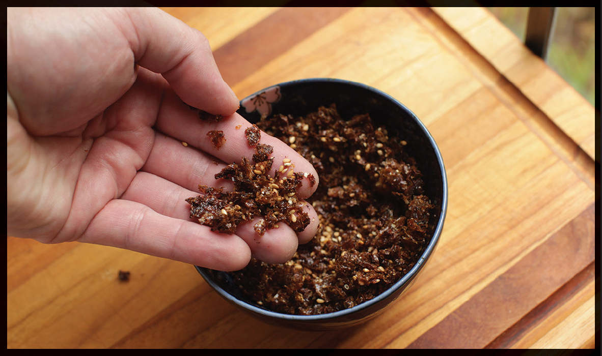

HOMEMADE FURIKAKE FROM SPENT KATSUOBUSHI
|
Yield Makes about ¾ cup |
Active Time 15 minutes Total Time 25 minutes |
Ao-nori is crumbled green seaweed used as a topping for many Japanese street food and rice dishes. Cooling the furikake on an aluminum pan will help it cool quickly and evenly (see here on why aluminum is so good at heating and cooling foods).
INGREDIENTS
Katsuobushi left over from 1 batch of dashi (or ½ ounce/15 g dried katsuobushi moistened with a few tablespoons of water)
2 teaspoons (10 ml) shoyu or light soy sauce
2 teaspoons (8 g) sugar
1 tablespoon (15 ml) mirin
2 tablespoons (16 g) toasted white or black sesame seeds
Up to 2 tablespoons additional dry ingredients, such as dried small shrimp, dried small anchovies, ao-nori (see Notes), freeze-dried shiso, togarashi, or finely crumbled nori
Homemade and store-bought furikake have the same culinary uses (sprinkling over steamed rice or, if you’re my wife, Adri, eating out of hand as a snack), but they are quite different in texture and flavor. One is not better than the other; they’re just . . . different. As with Kraft mac and cheese and the homemade stuff, sometimes you crave one, sometimes you crave the other, and there’s no need to judge anyone on their preference.
The main difference is that commercial mixes typically include a host of freeze-dried ingredients, like egg yolks, wasabi, or shiso. They also use industrial machinery to carefully dry out katsuobushi that has been cooked with soy sauce and sugar into crunchy granules, whereas homemade furikake tends to have a more mixed texture with some crispy bits and some softer clumps.
Both store-bought furikake and this recipe, based closely on the furikake recipe from the Yokohama-born recipe developer Namiko Chen of the site Just One Cookbook, are better than the vast majority of “furikake mix” recipes you’ll find online these days, which typically consist of nothing more than throwing together a dry mixture of nori, sesame seeds, shaved bonito flakes, and perhaps some togarashi or other chile together. For me, the process of cooking down the ingredients with soy sauce and sugar is an essential part of the flavor profile of furikake. Once you’ve got that bit under your belt, feel free to experiment with adding other ingredients, like poppy seeds, extra-small dried anchovies, or dried shrimp.
When making the furikake, note that, just like all sugary concoctions, its texture while hot does not reflect its texture when fully cooled. The furikake may seem moist and soft in the pan, but as it starts to cool, it’ll firm up and start getting crispy.
DIRECTIONS
1 If Using Katsuobushi Left Over from Dashi: Place the katsuobushi in a wok or a wide skillet or saucepan and cook over low heat until the individual pieces dry out and start to separate from each other as you stir, 10 to 15 minutes. Watch carefully, especially toward the end, to make sure that large clumps of moist katsuobushi get broken up and that small pieces don’t burn. I find that chopsticks are the best tools for separating clumps of moist katsuobushi and spreading them around.
2 Add the soy sauce, sugar, and mirin and continue to cook, stirring with chopsticks, until the liquid has completely evaporated and the katsuobushi starts to stick together in moist clumps that settle gently when you pile them up, about 10 minutes. You may notice the sugar starting to caramelize lightly on the bottom or sides of the pan, or you may smell a faint aroma of caramel. This is an indication the katsuobushi is done.
3 Transfer the katsuobushi to a rimmed metal pan, preferably aluminum (see Notes), using your fingertips to break it up into small bits as it cools. Once it’s completely cooled, transfer to a bowl, add the sesame seeds and whatever other ingredients you are adding, then get in there with your fingertips, squeezing and crumbling the dried katsuobushi until it is as fine as you’d like it. Store at room temperature in a sealed container for up to 2 months.

Done with Dashi? Don’t Throw Anything Out!
When making a Western-style meat stock, there’s not all that much you can do with the solid bits you’ve strained out when you’re done. I add carrots and celery to my dog’s dinner (make sure not to do this with onions, garlic, or any other allium—they are poisonous to dogs), but the spent carcasses and aromatics end up in the compost bin.
Dashi is a different story. With dashi, both the kombu and the katsuobushi can be repurposed into delicious toppings for rice: tsukudani from the kombu and niboshi and furikake from the katsuobushi.
Thankfully, because dashi is so simple, it’s also easy to sort and separate the kombu and katsuobushi after draining the dashi. Niboshi have a tendency to get tangled up in the katsuobushi, but fortunately, tsukudani doesn’t get hurt when a bit of stray katsuobushi ends up in it, and likewise a few stray niboshi won’t harm your furikake, so no need to be meticulous about separating everything.
The best thing about these preparations is that they both have an extremely long shelf life and can be added directly to cooked rice straight from the pantry (in the case of furikake) or the fridge (in the case of tsukudani).